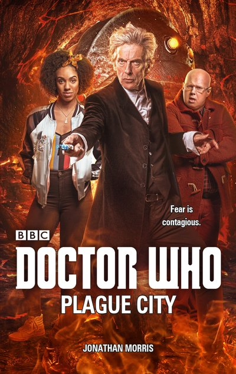

|
Plague City
|
BASIC PLOT DOCTOR COMPANIONS MATERIALISATION CIRCUIT Pg 227 Inside the sponge chamber underneath Edinburgh. Pg 230 Several days earlier (offscreen). Nine days earlier (offscreen). Pg 233 Inside the sponge chamber again, back in the main timezone. Pg 234 The TARDIS makes a side trip to New Earth that we don't see. Pg 245 Edinburgh, 2017. PREPARATORY READING CONTINUITY REFERENCES Pg 24 "It was locked, so he pulled out his sonic screwdriver and buzzed it until the iron lock clicked and clanked." Fury From the Deep et al. Pg 46 "The Doctor presented his psychic paper with a flourish." The End of the World et al. Pg 47 "'I sir, am the Lord Provost, Sir John Smith.' 'Good name, very memorable,' said the Doctor." Spearhead from Space et al. Pg 63 "I've known the Doctor for over twenty years." The Husbands of River Song. But see Continuity Cock-Ups. Pg 74 "The Doctor didn't need to sleep - he liked to say it was for tortoises" The Talons of Weng-Chiang. Pg 115 "It was as if she was suddenly remembring the loss of her mother all over again. Her mother's face. Her warmth." We saw Bill's mother in photos in The Pilot et al and in person (sort of) in The Lie of the Land. But see Continuity Cock-Ups Pg 138 "Narrows it down." World War Three. Pg 140 "'I have a duty of care,' she said." Possible reference to the Doctor saying the same thing in Under the Lake. Pg 145 "The Doctor buzzed the sonic screwdriver at the door, but it had no effect. 'Doesn't work on wood.'" Silence in the Library Pg 166 "Any more, or is that it? How about some logic puzzles? Maybe a maze?" Death to the Daleks, Pyramids of Mars. Pg 175 "That's how they communicate with each other, they sense and share their emotions. Bit like the Isolus, if you've ever heard of them." Fear Her. Pg 220 "And then, like a rock star at Wembley, the Doctor emerged from the fog, walking slowly and deliberately, strumming at his electric guitar." The Magician's Apprentice et al. Pg 225 "The Doctor handed his sunglasses to Bill." The sonic sunglasses first appeared in The Magician's Apprentice. Pg 234 "The Doctor... the Night Doctor came for me, and took me for treatment. There were these sisters, what looked like cats -" Cat nuns, New Earth. OLD FRIENDS AND OLD ENEMIES NEW FRIENDS AND NEW ENEMIES The Psycholops.
CONTINUITY COCK-UPS PLUGGING THE HOLES [Fan-wank theorizing of how to fix continuity cock-ups] FEATURED ALIEN RACES Pg 97 Grief leeches, 30 centimetre long gelatinous lampreys with serrated ridges and fronds at one end. Pg 107 The Night Doctor Pgs 172-173, 175 The Psycholops are a psychic gestalt, space-bound race who migrate in large shoals. They resemble large sponges and can possess people telepathically. FEATURED LOCATIONS IN SUMMARY - Robert Smith? |
|
 |